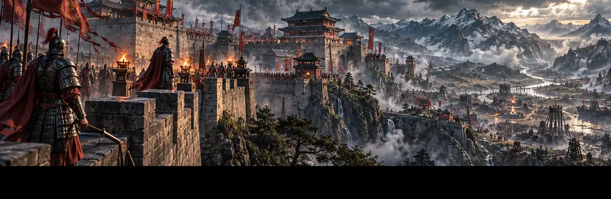

CANGLAN · A LIVING WORLD 原创概念美术
苍 岚
人 生 世 界
这不是一个游戏，
而是你可以活下去的世界。
超大古代开放世界 · 自由人生 · 百业经营
真实生态 · 六国纷争 · 山河万里 · 动态NPC
山川有四季 · 市井有烟火
朝堂有权谋 · 江湖有生死
你只是这世间之一。
朝堂有权谋 · 江湖有生死
你只是这世间之一。
VISION ART / 理想画质目标 · 非当前游戏截图

六国纷争乱世风云 · 合纵连横 修行体系凡人起步 · 百业可行01 / THE WORLD
万家灯火，各有生计。
在《苍岚》中，你不必是英雄。可以成为农人、商旅、匠人、守军，也可以独自行走山河。村落因生产与贸易而繁荣，人物有姓名和生计，季节与战乱真正改变他们的命运。
02 / ART DIRECTION
我们要抵达的，苍岚。
精致国风山水、真实市井与有生命的人物。这些海报表现最终追求的视觉方向；不是当前 APK 的画面截图。
视觉概念 / CONCEPT ART：以上均为专为《苍岚》制作的方向性插画，不是游戏实机截图或已交付的3D模型。项目实际品质、人物动画及体验应以当前签名测试包为准。
03 / LIVE BUILD
一个基础包，世界持续生长。
官方已签名热更新 查询中
正在读取正式版本…
只有真实签名发布的PCK才会出现在这里，开发草案与海报不算游戏更新。
资源补丁由客户端验签；原生APK变更仍须覆盖安装。ART DIRECTION · 非实机
04 / DEV JOURNAL
开发日志
记录我们真正做过的事，也记录失败和待修复的缺陷。
正在同步正式开发日志…私有项目主线源日志自动同步 · 网页约每60秒轮询
正在读取工作日志…
尚未载入
05 / CHANGELOG
更新日志
仅依据真实发布的官方签名补丁，不混入尚未上线的实验功能。
正在读取正式发布记录…
更新数据以签名版本和SHA256凭证为准。
06 / DOWNLOAD进入苍岚，
进入苍岚，
书写你的一生。
正在查询固定签名Android安装包…
下载 Android APK已安装旧版本的玩家请优先使用游戏内「检查更新」。升级APK请同证书直接覆盖安装，勿卸载旧版，以免删除本地存档。07 / COMMUNITY
与同路人，一起见证世界。
参与测试、提交问题、讨论人物和世界观。你的意见将成为《苍岚》真实开发记录的一部分。